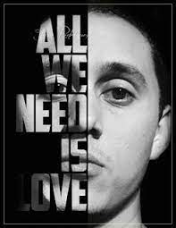
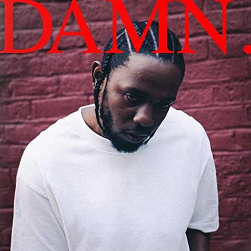

Cancerbero
Tirone José Gonzalez Orama, conocido artísticamente como Canserbero, fue un rapero, compositor y activista venezolano. Fue uno de los intérpretes más significativos del rap independiente en su país de origen y en América Latina.

Ice Cube
O'Shea Jackson Sr., conocido profesionalmente como Ice Cube, es un rapero y actor estadounidense. Comenzó su carrera a finales de los años 80 como miembro del grupo de gangsta rap, N.W.A.

Kendrick Lamar
Kendrick Lamar Duckworth es un rapero, compositor y productor discográfico estadounidense. Ha sido aclamado por críticos, músicos y fanáticos por sus vívidas letras y narraciones sobre sus experiencias